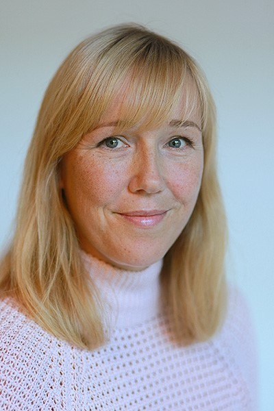

Ensomhet
Ensom blant andre
Mange studenter bor i kollektiv og er omgitt av folk hver dag. Likevel kan de føle seg ensomme. Rådgiver Terese Engedahl ved Høgskolen i Østfold mener ensomhet handler om mer enn å være alene.

Vi spurte Terese Engedahl om hun opplever at mange studenter er ensomme.
- Det gjør jeg. Veldig mange synes det er vanskelig å si hei. De bor i kollektiv, og er likevel ensomme, sier hun.
Engedahl er rådgiver ved Seksjon for studentoppfølging på Høgskolen i Østfold (HiØ), og studieveileder for blant annet bachelorstudiet i digitale medier og design.
Ingen å lene seg på
For Engedahl handler ensomhet om å ikke ha noen å støtte seg til eller lene seg på.
- Jeg tror ensomhet finnes i flere former. Man kan ha en stor vennegjeng, men likevel føle seg ensom, sier hun.
Noen sitter med andre følelser enn de rundt seg, eller kjenner at de ikke helt kan sammenligne seg med de andre. Da kan man bli ensom blant andre. Ifølge Engedahl handler det om en reell opplevelse av å bli sett og hørt for den man er.
"Man kan ha en stor vennegjeng, men likevel føle seg ensom."
En venn eller tusen
Samtidig er ikke alle som går alene, ensomme. Mange føler seg ikke ensomme i det hele tatt, forteller Engedahl. De har ikke behov for så mange folk rundt seg, eller for mye sosial aktivitet. For noen er jobben og studiene nok, og mange studenter har mange venner på nett.
Noen studenter sier selv at de ikke har så stor sosial kapasitet. For dem kan en god venn være nok. Om man har en venn eller tusen, er ikke det viktigste, mener Engedahl. Det er kvaliteten som teller.
Færre ensomme enn før
Studentenes helse- og trivselsundersøkelse (SHoT) er Norges største undersøkelse om hvordan studentene har det. I 2026 svarte nesten 54 000 studenter.
Andelen som ofte eller svært ofte savner noen å være sammen med, har falt fra 29 prosent i 2022 til 19 prosent i år. Det betyr at nesten en av fem studenter fortsatt kjenner på det.
Kilder
- Intervju med Terese Engedahl, rådgiver ved Seksjon for studentoppfølging, Høgskolen i Østfold, 12. november 2026.
- Høgskolen i Østfold: Terese Engedahl
- Studentenes helse- og trivselsundersøkelse (SHoT) 2026
- NTB/Dagens Medisin: Studentundersøkelse: Psykisk helse opp, ensomhet ned
- SiØ: Råd og helse
- Mental Helse: Hjelpetelefonen 116 123